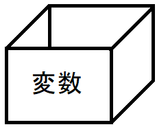

入力したデータを覚えておく箱データを入力するためには、入力したデータを覚えておくための「箱」が必要です。この箱のことを「変数」と呼びます。  変数の型変数には扱うデータに応じて、いくつか種類があります。こういった種類のことを「型」と呼びます。 全てではありませんが、次のようなものがあります。
|
|
当Webサイトに記載されている内容は、筆者が独自に調査・研究した内容をまとめています。 そのため、記載されている内容によって、 いかなる損害が発生したとしても、筆者は責任を負いかねますのでご了承ください。 |